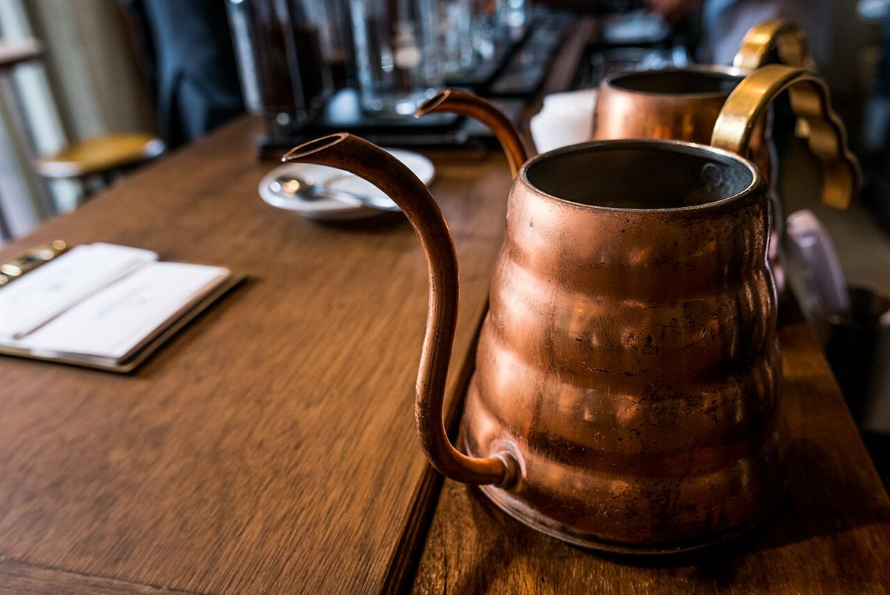
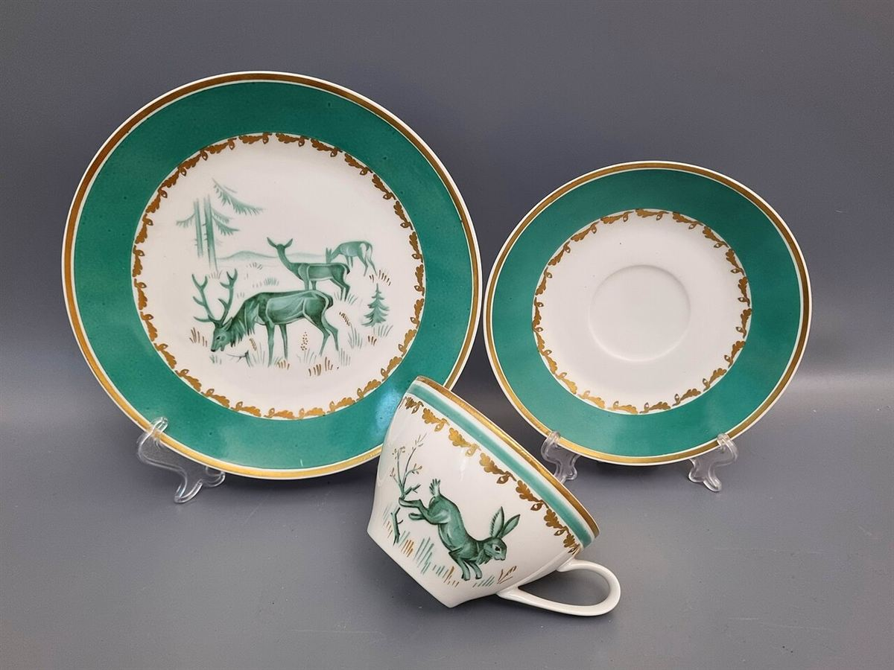

福井県坂井市坂井町河和田17-4
試作サンプル(店舗の公式サイトではありません)
メニューの詳細は準備中です(お問い合わせください)。
準備中(お問い合わせください)
アレルギー対応・テイクアウトの可否についても準備中です(お問い合わせください)。
最新情報はInstagramでご確認ください(@rakicafecommunity)


掲載写真はフリー素材のイメージ写真で、店舗の実際の様子ではありません。他地域で撮影されたもの、撮影地が不明なものを含みます。